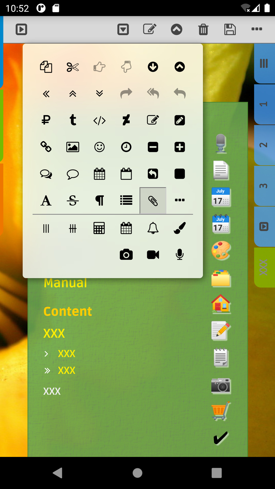
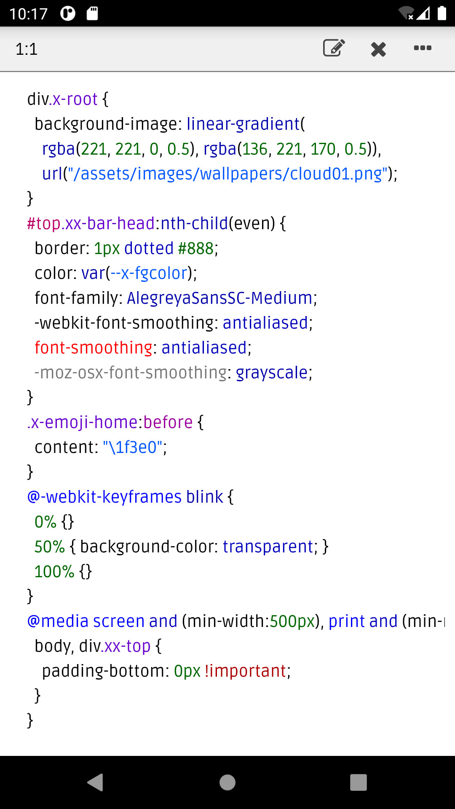
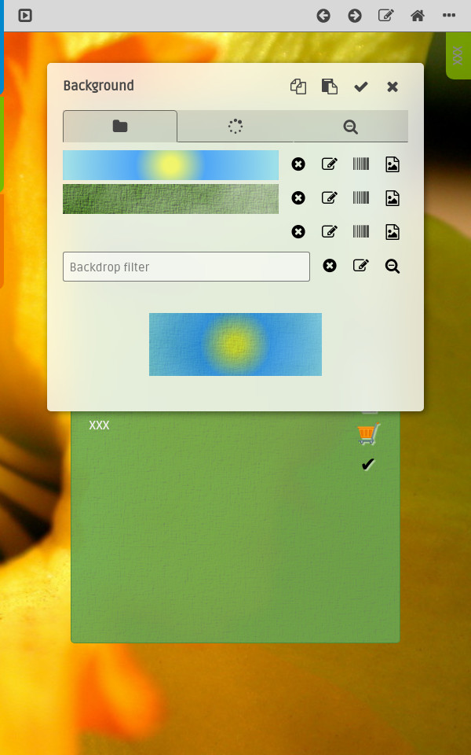

v 3.0.0 (beta5)
features
- RSA generation now try 4096, 3072 and 2048 bits until success. Export public key no longer support exporting in QRCode image formats due to size limits, use DER or PEM formats instead.
- Backup format is now default to format 14 and older format versions are no longer supported. Use older version of this app. to export/import data through zip files if neccessary.
- Image viewer now support pinch-zoom with pinch-zoom gesture on touch deviece or ctrl-click/ctrl-click-drag with mouse device. The image viewer export action now prompt for a region to export instead of always exporting the whole image. When showing images in a popup image viewer using the client action x-action=view, the image viewer scan the html page to create a list of image links and you can use the prev ( ) and next ( ) actions to show the previous image or next image in the list without having to navigate between the image viewer and the html file.
- Gallery pages generated by Generate Gallery action ( ) and image holders generated by builtin right sidebar actions now use client action x-action=view to show images and avoid having to navigate between the html and image files.
- Copy/Cut/paste action now automatically fix the URL references in the html and CSS files and adjust relative links in the moved file to point to the original target. It also fix absolute or reletive URL references in all other html and CSS files that references the moved files. The app maintain a database of the cross references to do this. In case of doubt, there is also a rebuild cross references action ( ) in the Files panel that rebuild the database for files under the current directory.
- The Conversion action ( ) now support converting PDF files to images. and from/to .webp files. The PDF and WEBP support is builtin in Android version but require GraphicsMagick / ImageMagick package availlable at desktop.
- The Conversion action ( ) also support converting between zip/backup files when a zip/backup file is selected. Backup conversion now support .zip <-> .backup, .backup <-> .backup and .ibackup -> .backup conversion.
- The Show File Info action ( ) now show more information. In particular, it show a preview of image and pdf files and details of backup files.
- Removed create thumbnail option in prompt image output dialogs. It is now preferred to create data URL instead of thumbnail image files. Create thumbnail button ( ) in Insert image actions now support creating data URL ( ) instead of thumbnail file as thumbnail. Generate Gallery action ( ) also use data URLs for thumbnails.
- The checkbox list dialog, eg. for prompting file list in Generate Gallery action now support drag select making selecting/deselecting multiple files much easier.
- The app now support HTML5 using the builtin audio and video player control to play audio/video in gallery pages. Click on the poster image, play the audio/video in a custom popup audio/video player.
- The Files panel and Filepicker dialog now support navigating to previous ( ) / next ( ) visited directory. There are also new verify directory ( ) and verify backup file ( ) actions.
- Updated the template pages, in particular, the Media template and Shopping templates has a very different right sidebar action menu. The Media template added Horizontal Scroll ( ) and Vertical Scroll ( ) template actions that allow scrollable thumbnails. These are also used by the Generate Gallery action when the Scrollable tn. option is selected.
- Added todo-v2c template and used as default. It is almost same as todo-v2 template except it override the bullet lists to fit more text on screen.
- The System actions, in particular, Reset User Settings ( ), Factory Reset ( ) and Print ( ) actions, are now moved into the Browsing Contextmenu. The menu also contains the Quit ( ), Backup Key Manager ( ), Screenshot ( ), Calculator ( ) and Copy ( ) actions. The Screenshot ( ) action is also available at the Files panel.
- And many more plus bug fixes.
Desktop specific
- Added PDF and WEBP support, if ImageMagick / GraphicsMagick package, in particular the identify, convert / gm commands, are available at desktop.
Android specific
- The Android version now require API 30 or above.
v 3.0 (beta3)
features
- Improved Gallery Generator with One Level Down option to generate an index page for html files in each subdirectory and Large Thumbnail option to generate double size thumbnails, ... etc. in the .
- Open links to PDF file in a new window with Electron builtin .
- The app now use HTML5 audio and video controls to play and . The Files panel and the media templates now has a PlayAll ( ) action to play all audios in the current directory or the current page.
- Better support for importing/exporting/deleting public keys in .
- Support WEBP image format and PDF to image conversion if GraphicsMagick package is installed and the gm command in exection path. Image conversion action automatically split large images to fit in webp format limits and generate an image for each page of a PDF file. Generate Gallary action generate preview of the first page of the PDF file as thumbnail.
- Forward ( )/backward ( ) navigation actions in and .
- Named Anchor ( ) action to quickly add named anchor.
- Background Image client action at to quickly change background image/gradient, works like the Background Image action in the Main Contextmenu.
- Pinch/zoom is supported in popup ImageViewer in addition to support in full-screen ImageViewer. Click on image now cycle between fit/fit-minor/original size where fit-minor fit width to screen width for portrait orientated image and fit height to screen height for landscape image. Also the Scan Barcode action now works on the zoomed image instead of the whole image.
- There is an Auto date format that automatically show date in short forms when possible.
- Improved checkbox list selection to extend selection on drag making it a lot easier to select multiple items. It also show file time and size when applicable.
- Backup Conversion ( ) action in Files panel support conversion between backup/zip files. In particular, it allow re-encrypt backups using the current backup key.
- Calculator now support paste from local clipboard. It also save the textual input expression and making it much easier to edit/change an existing value.
- Improved File/Dir Info ( ) action in the Files panel to show more detail information on selected file/dir.
- New Backup File Format ( 13 ) that include more data in the signature. Reading of backup file format 11, 12 are still supported.
- New Screenshot action in the .
- And many more ...
- And many bug fixes too.
v 3.0.0 (beta1)

Introduction (Desktop)
This is the desktop version of
C+edition v3. It is very similar to the C+edition v3 for Android and iOS, and documents can be moved between the desktop and mobile versions. A few notable differences:
- The desktop version is currently in beta. It is currently tested to works in Linux only and lack the media recording features.
- Unlike the mobile versions that keep encryption keys in hardware backed keystore, that is device only and not exportable, the desktop version keep the keys in a
password protected keystore The keystore is protected by a password. The application read the password from stdin at startup. So typically, you start the application with:
cat passfile | java ...
See
scripts/start.sh for details. You should keep the passfile at a secure storage.
file and keys can be easily managed with Java keytool. - Unlike the moble versions that encrypt the documents in the Home directory, the desktop version keep documents in the Home directory as
plain text fileYou are encouraged to keep the application and documents in an encrypted disk and use version control software of your choice.
. - You can launch the desktop version in debug mode and have the Developer Tools at your disposal.
- A few keyboard shortcut is available:
- Ctrl+Shift+i Show developer tools (when debug is enabled at the client by command line switch
-dEnable debug and show developer tools on startup.
or -DEnable debug without showing the developer tools on startup.
). - Ctrl+f Show search bar.
- Ctrl+Shift+f Show main toolbar.
Feature highlights
For the new comers, here are some notable features of the app:
- Rich HTML editor with multi-level undo and redo, text search, lots of fonts, resizable UI, ... etc.
- CSS editor for file with syntax highlight, context assist, text search, ... etc. You can switch between HTML and CSS editor in a
single clickFor the desktop version,shift+right-click below the right sidebar would bring up the CSS editor for the last writable CSS file that is linked to the HTML file.
This works regardless when HTML is in browsing or editing mode and any changes to the CSS file would be applied to the HTML file automatically.
or swipe. The full feature CSS editor is also used to in HTML file. - Task specific page templates and actions that make , , , albums, ... etc. quick and easy.
- File manager help you keep track of thousands of files with ease.
- Encrypted backup/restore, unencrypted export/import, ... etc, allow moving files around securely or with ease.
V3 features
While many user visible features are very similar to v2.x, there are some major rewrites and changes under the hood in v3.0 and render this version not backward compatible with v2.x. Here are some of the highlights for this release:
- Backup files are now protected using asymmetric crypto. Each instance has its own unique private/public key pair for backup and restore. Backup files are only readable by recipients with private key that corresponds to one of the imported public keys used when creating the backup.
- The Internal and External directories are now unified to show under the Files panel along side with the Home tree. You may now move files around by simply copying files between the various directory trees, including HTML, CSS, all the media files and even backup or zip files.
- The UI now use translucent background with backdrop filter to pickup some colors from the background. Dialogs are and do without labels in many cases. In other cases, it added tab panes for .
- The CSS editor now has a format action that to reformat your CSS files. The CSS editor also save its cursor position on close and restore the cursor position on open, making it a lot easier to switch between HTML and CSS editing.
- There is now a CSS Style menu at the right sidebar and Main Contextmenu that make it easier to add/remove CSS classes to/from an element. Along with convenient, single click or swipe, access to custom stylesheet editing, using custom stylesheet is much easier.
- The app. now support standard HTML5 audio/video tags to play audio/video. There are Insert Audio and Insert Video actions to insert the AUDIO and VIDEO element to any document.
- The Audio and Photo templates are now merged into a Media template where you can embed all kind of media files in one place.

- The in the Main Contextmenu/Fonts menu is expanded to handle background-image with gradient, image and backdrop filters. Indeed it replaced the Glass widget action in the Widgets menu as it can do that and more.
- Clicking the size column of a directory in the Files panel now shows the total number of files and size under the directory that would be useful, for example, for estimating the size of a backup.
- Very often, an IMG element is wrapped inside an anchor (A) element so that it open the image viewer on click. There is now a custom attribute x-action="view" for the IMG element that would do the same without having to use the anchor element. In some cases, this make it a lot easier to layout images.
- And many more ...
{kind=link}
{kind=link}
{kind=link}
{kind=link}
{kind=link}
{kind=link}
{kind=link}
{kind=link}
{kind=link}
{kind=link}
{kind=link}